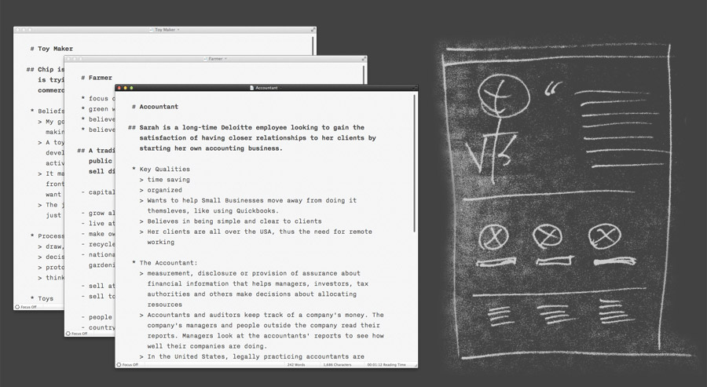
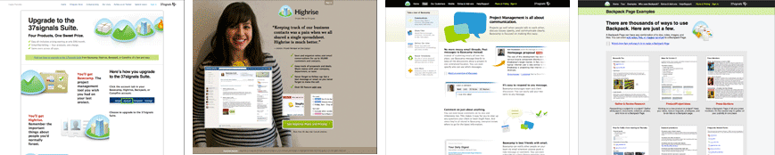

An exploration in the design and storytelling of happy 37signals customers, by Mig Reyes
An exploration in the design and storytelling of happy 37signals customers, by Mig Reyes
The challenge was to craft stories for a diverse range of satisfied 37signals customers, including a toy maker, farmer and an accountant. With beauty and clarity in mind, this was a perfect opportunity to shape a more consistent visual and typographic language throughout all 37signals marketing.
While I envisioned this challenge being a visual exercise, I had no content to work with. So before jumping to sketches, I spent the first few days thinking about what challenges farmers, toy makers and accountants face. From documentaries to articles about each of these industries, I jotted down story starting-points and made connections to all of the 37signals products.
In considering aesthetic choices for each three of these stories, I wanted to make sure each person’s page felt custom and cared for. While effective, clear and beautiful on their own, existing 37signals marketing pages could benefit from a push for visual consistency.
